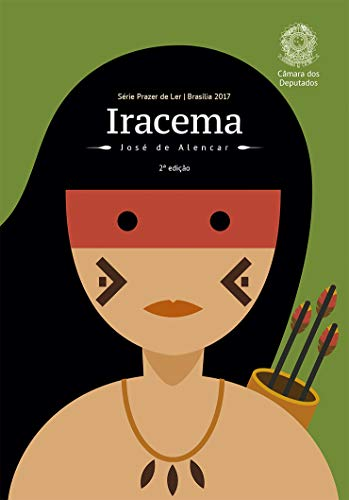

Os melhores livros da literatura brasileira possuem alguns pontos em comum: eles tiveram o poder de revelar com maestria diversos aspectos da sociedade, cultura e política do nosso país em determinada época. Hoje, eles são obras clássicas, que mostram com profundidade o talento e a riqueza da nossa cultura e dos nossos autores.
Os clássicos são, geralmente, aqueles livros que retratam a época em que foram produzidos. Embora descrevam cenários passados e condições típicas de um período, eles conseguem atravessar gerações por tratarem de assuntos atemporais.
É comum encontrar histórias repletas de emoções, como ódio, amor, alegria e sofrimento. São recursos que aproximam o leitor do texto e, muitas vezes, permitem que ele se identifique com os personagens. Não é à toa que os contos resultantes atingem diferentes públicos com facilidade.
Os clássicos da literatura brasileira também influenciam o trabalho de outros autores e servem de inspiração para a criação de obras recentes, independentemente do gênero. Por isso, não perdem seu valor com o tempo e são lembrados com frequência, sobretudo na área da educação.
“Ao verme que primeiro roeu as frias carnes do meu cadáver dedico como saudosa lembrança estas memórias póstumas”. Esta é uma das frases mais célebres da literatura brasileira e que dá início a um dos maiores clássicos de Machado de Assis. Memórias Póstumas narra em primeira pessoa a biografia de seu protagonista defunto e é sem dúvidas, um livro essencial para quem aprecia literatura brasileira.
Uma grande odisseia sertaneja. Grande Sertão: Veredas traz a cultura nordestina e as angústias do jagunço Riobaldo para as páginas. Em conflito consigo mesmo, Riobaldo tenta convencer o leitor e a ele próprio de que é inocente dos seus atos como jagunço, do amor que sente por Diadorim e do pacto que fez com o diabo.
A obra conta as aventuras do retirante Severino em sua busca pela felicidade. Trata-se de uma pessoa que acreditava poder viver uma vida mais alegre e tranquila se saísse do Nordeste, fugindo da seca da região.
Entre os clássicos da literatura brasileira, Morte e Vida Severina se destaca por ser narrado em versos. Toda a história traz questões relacionadas ao sofrimento do rapaz durante sua partida para o litoral. A qualidade é tanta que, mesmo fazendo parte do período Modernista, o título permanece como referência de crítica social.
A trama gira em torno de um suposto triângulo amoroso envolvendo Bento Santiago, sua mulher Capitu e seu grande amigo de infância Escobar. Bentinho, como é chamado o narrador, é um homem muito ciumento e desconfia da esposa em diversos momentos.
Além dos sentimentos em relação à moça que ama desde criança, o personagem entrega detalhes da sua infância e da vida que teve no seminário. Para equilibrar bem as mensagens aos leitores, o autor mistura aspectos formais e informais da língua portuguesa. Trata-se de uma das obras que mais instigam o público e deixam dúvidas sobre o caráter de Capitu.
Como o próprio nome indica, o romance naturalista de Aluísio Azevedo se passa em um cortiço carioca. Apesar de ter um protagonista, João Romão, o livro intercala a sua história com vários episódios da vida dos moradores do cortiço. Este formato faz com que muitos digam que afinal a personagem principal do romance é a massa de gente, a coletividade que vive naquele ambiente.
O principal clássico da literatura infantil brasileira. O Sítio do Pica-pau Amarelo é uma série de 23 livros sobre as aventuras dos netos da Dona Benta, Pedrinho e Narizinho. Passam por mil e uma aventuras na companhia de seus inseparáveis bonecos Emília, a boneca de pano falante e Visconde de Sabugosa, um sábio boneco de sabugo de milho. Aventuras que pontualmente acabam a tempo de comer os quitutes preparados pela Tia Nastácia.
Este romance realista tem como pano de fundo a situação dos retirantes, forçados a abandonar as suas casas no desolado sertão nordestino e buscar uma nova vida nas cidades. Apesar de Graciliano Ramos não focar tanto nos efeitos da seca na vida de suas personagens, ela é o ponto propulsor da narrativa.
Uma das maiores epopéias da literatura brasileira, Os Sertões revela com maestria diversos aspectos da sociedade brasileira do final do século XIX ao retratar A Guerra de Canudos. O romance é considerado o primeiro livro reportagem brasileiro e engloba tanto questões sociais quanto geográficas, econômicas e políticas do Brasil durante aquele período.
A primeira obra de ficção do período romântico brasileiro. Foi também o primeiro romance a trazer os hábitos da burguesia carioca da época para as páginas. Em uma viagem, 4 estudantes de medicina fazem uma aposta de que se um deles se apaixonasse durante o veraneio, teria que escrever um livro a respeito. Um deles se apaixona pela Moreninha, mas já está comprometido.
O segundo livro da trilogia indianista de José de Alencar é um romance clássico que retrata a história de amor entre a índia Iracema e o colonizador Martim. O livro simboliza a criação da terra do autor, o Ceará. Moacir, o filho do casal, seria o primeiro cearense e um fruto da miscigenação vivida no país desde aquele período. O livro representa ainda a dominação sofrida pela América diante da colonização europeia.
